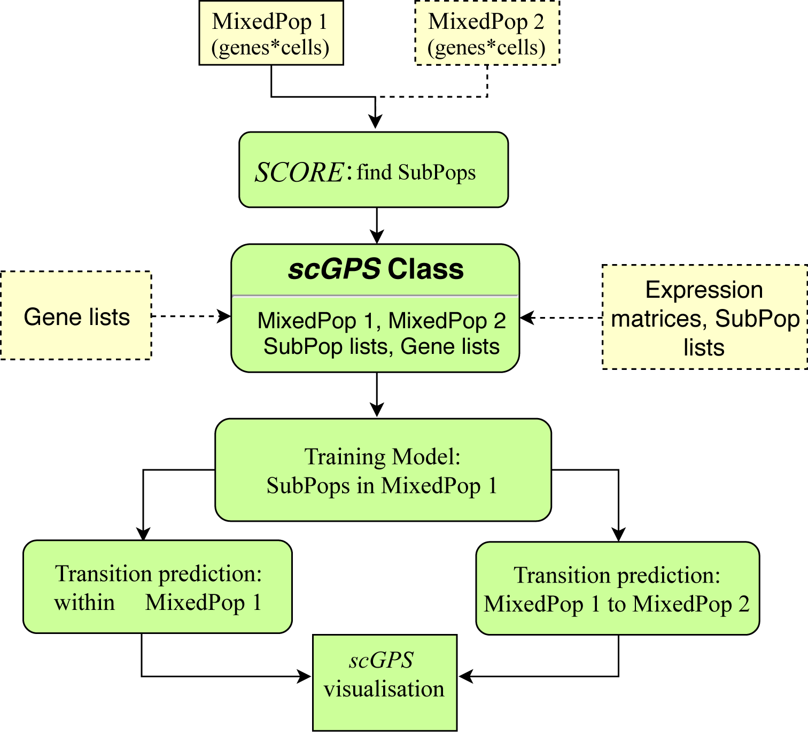

The scGPS package website is available at: https://imb-computational-genomics-lab.github.io/scGPS/index.html
The usage instruction can be found at: https://imb-computational-genomics-lab.github.io/scGPS/articles/vignette.html
scGPS general description
scGPS is a complete single cell RNA analysis framework from decomposing a mixed population into clusters (SCORE) to analysing the relationship between clusters (scGPS). scGPS also performs unsupervised selection of predictive genes defining a subpopulation and/or driving transition between subpopulations.
The package implements two new algorithms SCORE and scGPS.
Key features of the SCORE clustering algorithm
- Unsupervised (no prior number of clusters), stable (with automated selection of stability and resolution parameters through scanning a range of search windows for each run, together with a boostrapping aggregation approach to determine stable clusters), fast (with Rcpp implementation)
- SCORE first builds a reference cluster (the highest resolution) and then runs iterative clustering through 40 windows (or more) in the dendrogram
- Resolution is quantified as the divergence from reference by applying adjusted Rand index
- Stability is the proportional to the number of executive runs without Rand index change while changing the cluster search space
- Optimal resolution is the combination of: stable and high resolution
- Bagging algorithm (bootstrap aggregation) can detect a rare subpopulation, which appears multiple times during different decision tree runs
Key features of the scGPS algorithm
- Estimates transition scores between any two subpopulations
- scGPS prediction model is based on Elastic Net procedure, which enables to select predictive genes and train interpretable models to predict each subpopulation
- Genes identified by scGPS perform better than known gene markers in predicting cell subpopulations
- Transition scores are percents of target cells classified as the same class to the original subpopulation
- For cell subtype comparision, transition scores are similarity between two subpopulations
- The scores are average values from 100 bootstrap runs
- For comparison, a non-shrinkage procedure with linear discriminant analysis (LDA) is used
scGPS workflow
scGPS takes scRNA expression dataset(s) from one or more unknown sample(s) to find subpopulations and relationship between these subpopulations. The input dataset(s) contains mixed, heterogeous cells. scGPS first uses SCORE (or CORE V2.0) to identify homogenous subpopulations. scGPS contains a number of functions to verify the subpopulations identified by SCORE (e.g. functions to compare with results from PCA, tSNE and the imputation method CIDR). scGPS also has options to find gene markers that distinguish a subpopulation from the remaining cells and performs pathway enrichment analysis to annotate subpopulation. In the second stage, scGPS applies a machine learning procedure to select optimal gene predictors and to build prediction models that can estimate between-subpopulation transition scores, which are the probability of cells from one subpopulation that can likely transition to the other subpopulation.

Figure 1. scGPS workflow. Yellow boxes show inputs, and green boxes show main scGPS analysis.